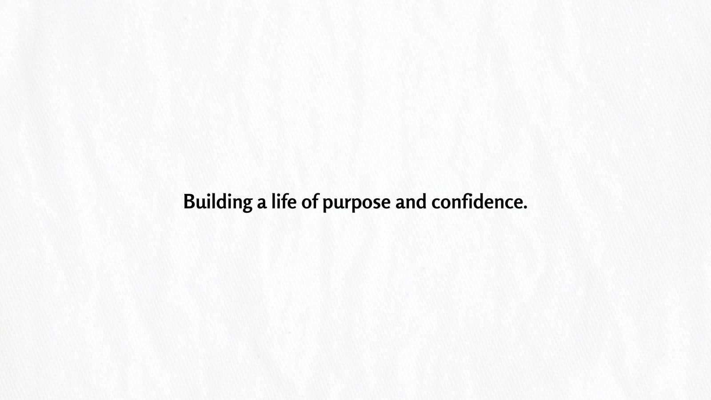
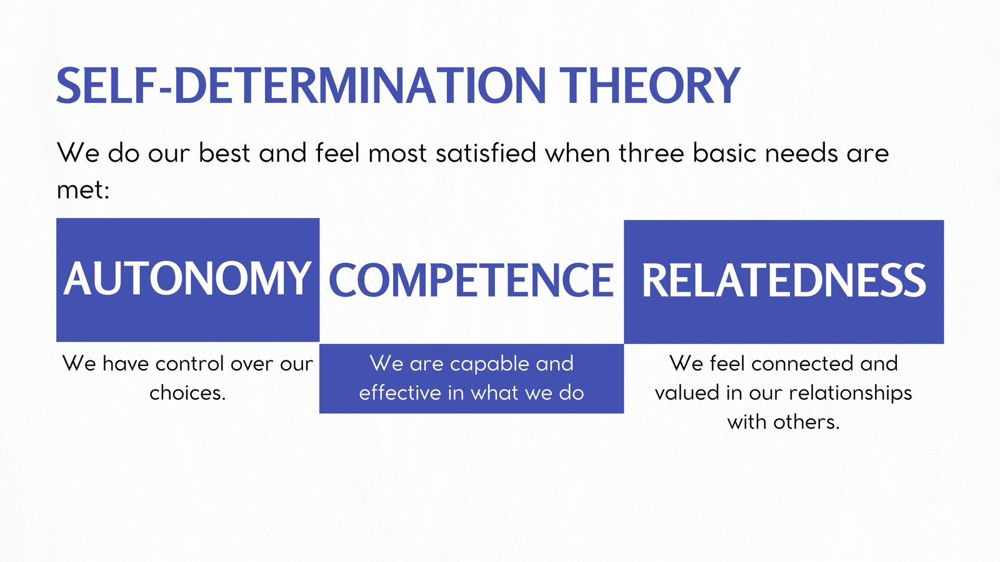
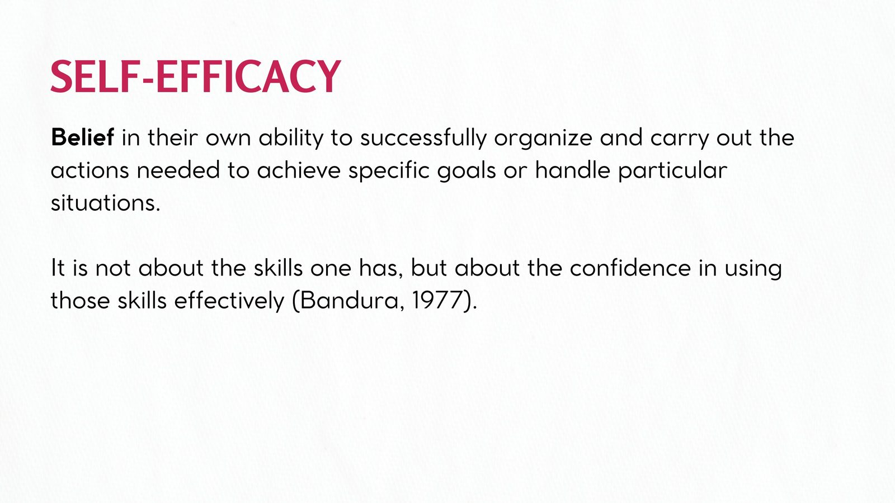

Reflections · Education & Development · Case · 2025
Building a Life of Purpose and Confidence
An invited face-to-face Healthy Mind session for SGV & Co. BS Accountancy student interns, using self-awareness, self-acceptance, resilience, self-leadership, and self-efficacy as ways to think more deliberately about purpose and confidence.
Engagement record
The experience at a glance.
- Client
- SGV & Co.
- Program
- ActivNation · Healthy Mind
- Role
- Wellness Coach and Speaker
- Talk
- Building a Life of Purpose and Confidence
- Date
- September 17, 2025
- Format
- Face-to-face
- Venue
- 3F STI Building, Ayala Avenue, Makati City
- Audience
- 300 BS Accountancy student interns
- Profile
- Graduating BS Accountancy students, ages 20–22
- Language
- English
Why this case matters
Confidence became less about performance and more about knowing, accepting, and directing the self.
The session began with self-awareness as a foundation for empowerment. From there, the material moved through self-regulation, emotional intelligence, and the different personal and social influences that shape how people understand themselves.
The talk also used Filipino psychological concepts, including kapwa, bahala na, and lakas ng loob, to place personal development within relationships, culture, and the social worlds people move through.
Documentary record
Three frames from the session.
Selected slides from the presentation deck prepared for the September 17, 2025 engagement.



From acceptance to resilience
Growth was presented as something that begins with a realistic relationship with the self.
The middle part of the session moved from self-acceptance to growth mindset and resilience. Rather than treating development as the removal of weakness, the material asked participants to recognize both the valuable and difficult parts of themselves while remaining open to growth.
The discussion of resilience also brought in Filipino concepts of determination and inner resource, connecting personal persistence with culturally grounded ways of understanding action under uncertainty.
Self-leadership and purpose
Purpose became practical when it was connected to choices, relationships, judgment, and goals.
The self-leadership section introduced goal setting and self-determination through autonomy, competence, and relatedness. It also examined judgment, reasoning, and diskarte as part of deciding how to move from an imagined future toward deliberate action.
The session closed by connecting self-empowerment with self-efficacy, learned helplessness, critical consciousness, and kapwa. Confidence, in that framing, was not simply feeling certain. It involved recognizing agency, using one's abilities, and understanding that personal development remains connected to other people and wider social conditions.
Education & Development
Return to the education and development record.
Explore the experiences where learning, communication, self-awareness, preparation, and growth became visible in practice.
Education & Development →